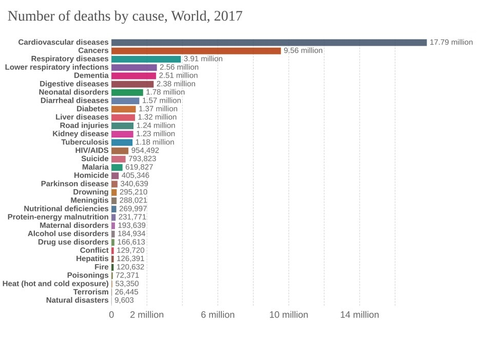

The Egyptian Statistics Authority reported that the number of deaths rose by 16.8% in 2020 compared with 2019. A lack of awareness among citizens — and their reluctance to go to hospitals for fear of transmitting infection — led to poorer health conditions, which was the reason behind the high number of deaths during that period.

The problem
Problems & statistics
Vital signs such as Heart Rate (HR), Heart Rate Variability (HRV), Oxygen Saturation (SpO₂) and Blood Pressure (BP) are important indicators of a person’s physiological and emotional wellbeing. Yet many people don’t follow up on their health until they are already facing a health problem.
See the numbers
By the numbers
Some statistics
Four realities that make contactless, low-cost vital-sign monitoring necessary.

The high cost of measuring vital signs is one of the reasons people don’t follow up on their health. More than 1 billion people live in extreme poverty (less than $1.25 per day), and 2.2 billion live on less than $2 per day (2011 data).
Traditional devices that touch the body and skin increase the risk of skin irritation and bacterial contamination. A survey of hospitalized patients from January 2020 to December 2020 found six types of bacteria that can cause infection.
By 2025, when most of today’s undergraduates will be in their mid-30s, more than 5 billion people on our planet will be using ultra-broadband, sensor-rich smartphones far beyond the abilities of today’s iPhones, Androids and BlackBerries. Methods of measuring vital signs therefore have the potential to be integrated into existing mobile phones (e.g., via an app download) — especially given the increasing prevalence of mobile devices in resource-constrained environments.
FAQs
Frequently asked questions
What is Vitalism Check?
Vitalism Check is a ready-to-use application and management portal that businesses can use to measure their clients’ health parameters remotely — or to let clients measure them on their own. The application is compatible with desktops, mobile devices and web applications.
Which devices is Vitalism Check compatible with?
Vitalism Check runs on Android mobile devices and on Windows laptops and desktops. It is also available as a web application for the Google Chrome and Safari mobile browsers.
Does Vitalism Check require an internet connection to measure health parameters?
Yes. An internet connection is needed to complete measurements with Vitalism Check.
Does Vitalism Check save images or videos of users?
No. Vitalism Check does not save images or videos of its users.
Does Vitalism have access to the data measured with Vitalism Check?
No. Vitalism has no access to the measured data. It is accessible only to your account admins and your clients, so that both of you can review measurement history and trends.
Does Vitalism’s health monitoring require contact with the skin?
Vitalism offers two measurement methods:
- Contactless, video-based (rPPG) — the user simply looks at the device’s camera.
- Contact-based (PPG) — the user places a finger on the smartphone’s rear camera. This method is intended for challenging conditions, such as complete darkness or excessive movement.

Get in touch
Ready to give it a try?
Talk to us today to learn more about our SDK and add video-based vital signs measurement to your platform.